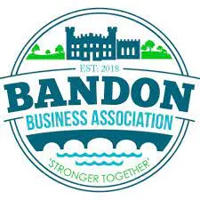

Bandon Summer Festival takes place on the 4th to the 6th of Aug 2023. This is the first year that this festival takes place and we are really looking forward to seeing you there! We have three days of events featuring food, music and sport. Please come along and enjoy what's on offer! There are events for all of the family to enjoy and take part in.
The festival is organised by the Bandon Business Association which is a group of like-minded businesses working together to improve Bandon. We are delighted to bring you this exciting event! The events takes place over the August bank holiday weekend 2023. Friday is a day of food events. Saturday is a day of music events and Sunday sees the sporting events taking place.